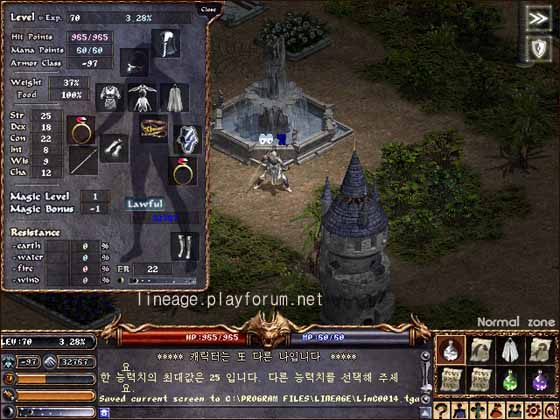
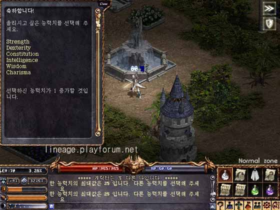
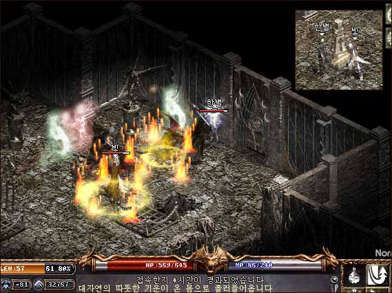

2003年2月22日
韓國伺服器出現第二名70級-97防角色！
來源：Lineage Playforum

繼"Poseidon"後，最近韓國伺服器另一名超高等級玩家"光"亦升上70等級，他的防禦有-97呢！

能力值的上限為25，其後便不能再加

"光"的老婆是一名女水妖，她也有57級-81防呢！
Copyright(C)1998-2003 Gabriel Leung. All Rights Reserved.